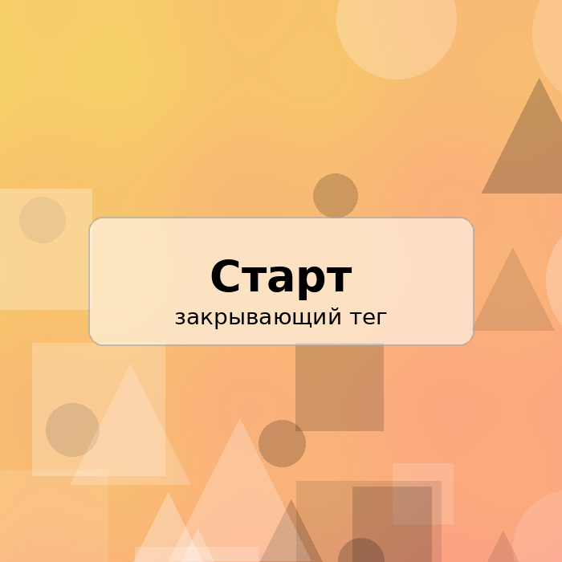

Фритрек и нулевой спринт: Подготовка к работе
старт

Это было похоже на вход в новую комнату: вроде всё интересно, но непонятно, за что хвататься первым. Я настраивала редактор, разбиралась с Git и привыкала к мысли, что теперь ошибки — это часть процесса, а не повод остановиться.
Самым важным стало просто начать. Даже если страшно открыть терминал или случайно нажать не туда, постепенно появляется ощущение контроля: можно читать инструкции, пробовать и исправлять.